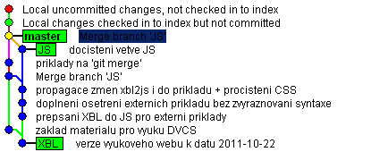

Distributed Version Control Systems – Overview
by Jiří Znamenáček
Úvod
Pokud chcete znát vývoj své práce na nějakém projektu v čase, označit jisté okamžiky v historii jako význačné nebo dokonce spolupracovat na stejném projektu s více vývojáři, budete – mimo jiné – potřebovat nějakou formu správy verzí (VCS = Version Control System).
V dalším se stručně podíváme na historii vývoje takovýchto systémů a na základy práce s některými z nich.
VCS
Historicky nejstaršími systémy pro správu verzí byly systémy centralizované. Asi celkem logicky odpovídaly tehdejšímu stavu počítačové techniky – výkonný centrální počítač s mnoha terminály připojenými na něj. Práce v takovém systému se vyznačuje především tím, že:
- Existuje jeden centrální repozitář s veškerým kódem a jeho historií.
- Každý vývojář si z centrálního repozitáře vytáhne (checkout) tu část kódu (a z té doby), na které chce právě pracovat. (Vedlejší efekt: Příkazy VCS operují pouze na té části podstromu, ve které se právě nacházíte.)
- Po skončení práce vývojář nahraje (commit) svoje úpravy zpátky na centrální server, aby se k nim mohli dostat i ostatní.
Mezi typické zástupce takovýchto systémů patří CVS a jeho duchovní potomek Subversion (SVN).
DVCS
S rozvojem internetu – tedy hlavně se vzrůstem možností komunikace po síti mezi lidmi navzájem – se začaly objevovat systémy pro správu verzí decentralizované. Jejich hlavními význačnými body je:
- Nemusí existovat (a často také neexistuje) žádný centrální počítač, který by držel „tu jedinou správnou verzi projektu a jeho historie“. Naopak každý z uživatelů si drží kompletní historii projektu sám u sebe a pouze ji s ostatními může sdílet.
- Asi to z předchozího bodu není úplně jasné, ale každý uživatel má u sebe projekt úplně celý, tzn. narozdíl od nedistribuovaných VCS nemůže pracovat pouze s jeho podčástí. (Vedlejší efekt: Příkazy DVCS fungují globálně na celý projekt nezávisle na tom, ve které části podstromu se zrovna nacházíte.)
- Zároveň z toho vyplývá, že každý z účatníků stejného projektu u sebe může mít (a v naprosté většině případů také má) projekt v dosti rozdílném stavu od ostatních, a to včetně jeho historie.
Typickými představiteli těchto systémů jsou např. GIT a Mercurial, se kterými se dále více seznámíme.
Ignorované soubory
Z mnoha různých důvodů se ve vašem pracovním stromě repozitáře mohou (pravidelně) objevovat soubory, které ale nepatří do historie projektu.
Verzovací systém se k takovýmto souborům chová různě – v lepším případě vás s nimi jen pokaždé bude otravovat, zda je nechcete přidat do historie, v horším je tam v rámci nějakého obecnějšího příkazu rovnou přidá (a vy pak budete mít problém je z ní nějak čistě odpreparovat).
K řešení těchto situací se používají tzv. seznamy nebo vzory ignorovaných souborů. Jsou to „obyčejné“ textové soubory (se speciálním jménem a umístěním), v nichž se vyjmenují buď přímo jednotlivé soubory, které nechcete v rámci verzovacího systému uvažovat, nebo v obecnějším případě nějaká (často regexpová) pravidla pro jejich rozpoznávání.
Verzovací systém pak všechny soubory, které vyhovují předpisům uvedeným v těchto konfiguračních souborech, jednoduše ignoruje – nikdy vám nejsou nabídnuty ke správě, ani se nikdy automaticky „samy od sebe“ v historii neobjeví.
Paralelní vývojové větve
Velkou předností (alespoň některých) verzovacích systémů je možnost práce ve více paralelních vývojových větvích najednou.
Základní myšlenkou (alespoň v případě gitu) je, že jedna z větví je hlavní – provádíme v ní minumum úprav, aby veškerý kód byl co nejstabilnější a s co nejméně chybami. Potřebujeme-li vyzkoušet či připravit nějakou větší změnu, pracujeme na ní paralelně s hlavní vývojovou větví ve větvi vedlejší a teprve ve chvíli, kdy je nový kód připraven a odladěn, provedeme jeho začlenění (merge) do větve hlavní.
Poznámka: Zatímco pro git jsou paralelní vývojové větve především nástrojem pro rychlé testování nových myšlenek („Nešlo by to třeba takhle?“) a je snadné je vytvořit i zase zrušit, mercurial je naopak používá v prvé řadě pro stabilní paralelní verze repozitáře („aktuální verze pro zákazníky, příští verze pro zákazníky…“).
Příklad
Podívejme se na následující ukázku z vývoje slajdovacího systému tohoto webu (výřez ze screenshotu nástroje gitk):

Vidíme, že v uvedeném časovém období, z něhož pochází náš výřez, probíhala práce s repozitářem ve dvou větvích zároveň – ve větvi hlavní (zvané master) a v jedné větvi vedlejší (zde pojmenované JS).
V čase probíhal přepis následujícím způsobem (od nejstarších nahoře po nejnovější dole; v grafu z gitk je to přesně naopak):
| master | JS |
|---|---|
| byl položen základ těchto slajdů | |
| začal přepis XBL do JavaScriptu, zabral celkem tři samostatné komity | |
| změny z větve JS byly (po odzkoušení) promítnuty do mastera | |
| přidány příklady na git merge | |
| drobnější úpravy | |
| změny z větve JS byly (po odzkoušení) promítnuty do mastera | |
| v masterovi jsou připravené nové změny, část z nich bude komitována, část nikoli | |
Git vs Mercurial – architektura
Oba tyto DVCS vznikly jako reakce na uzavření volné verze nástroje BitKeeper v roce 2005, díky čemuž bylo třeba pro správu linuxového jádra najít náhradu za něj. Od té doby hoří na internetu debaty, který z nich je lepší.
Podívejme se nejdříve na rozdíl mezi nimi z hlediska jejich architektury:
- Mercurial je víceméně jediný spustitelný soubor, který zajišťuje veškerou práci s repozitářem. (Na Windows zabírá jeho instalace asi 20 MB.) Navíc je převážně napsaný v Pythonu.
- Git je obrovská sada jednotlivých příkazů, které všechny v duchu unixové tradice spolupracují na výsledném efektu. (Na Windows zabírá jeho typická instalace asi 200 MB, tedy 10x více než Mercurial!)
K tomu je třeba dodat následující:
- Většina příkazů v Mercurialu byla navržena tak, aby co nejvíce odpovídaly způsobu práce se systémem SVN (a tedy snadno přitáhly jeho uživatele).
- Git je podstatně „nízkoúrovňovější“ než Mercurial, budete se toho muset více naučit, ale na druhou stranu získáte nástroj, ve kterém se nějak dá „napáchat“ skoro všechno.
Popravdě je git spíše nadmnožina verzovacích systémů obecně (občas se ne až tak moc žertem říká, že v gitu můžete napsat nové verzovací systémy), takže je jednoduše mocnější než ostatní nástroje, ale ruku v ruce s tím je také patřičně rozsáhlejší a složitější.
Git vs Mercurial – práce
Teď se podívejme na srovnání typických pracovních úkonů v obou systémech:
| Mercurial | Git | |
|---|---|---|
| přímý komit změněných a nových souborů | ano | ne |
| preferovaný způsob práce s větvemi | klonování repozitáře | přepínání uvnitř pracovního adresáře |
| přímá propagace všech větví do vzdáleného repozitáře | ano | ne |
| podpora „indexu“ (staging area) | ne | ano |
| podpora „záplatování“ (patches) | pomocí rozšíření | ano |
| „historie je svatá“ | (většinou) ano | přepsat se dá skoro všechno |
| (s historií související) likvidace nepotřebných větví | téměř nemožná, případně s rozšířením | ano |
| (s historií související) rebase | jako rozšíření | ano |
Nyní pár komentářů k předchozím bodům:
- přímý komit změněných a nových souborů: Jestliže v pracovním repozitáři změníte nějaké soubory či adresáře, přidáte nové nebo naopak staré smažete, Mercurial je při příštím komitu automaticky zanese do historie. Git tak udělá pouze na vyžádání, jinak je musíte nejdříve přidat do tzv. indexu (staging area) – na jednu stranu je fajn, že si můžete vybrat soubory pro komit, na druhou se ovšem předpokládá, že do repozitáře komitujete tehdy, když je pracovní stromeček v použitelném stavu, což se asi blbě zjišťuje, když některé soubory nechcete úmyslně nakomitovat.
- preferovaný způsob práce s větvemi: Ačkoli oba systémy umožňují téměř stejnou práci s paralelními vývojovými větvemi, už samotní výrobci obou systémů preferují zcela opačné strategie – Mercurial klonování repozitáře do nového adresáře, Git přepínání na jinou větev v rámci stejného pracovního adresáře. Největší rozdíl však spočívá v něčem jiném – u Mercurialu je označení větve součástí popisu komitované změny, takže se dá kdykoliv dohledat (pokud ovšem nepoužijete nějaké nedoporučované rozšíření na manipulaci historie), kdežto u Gitu je označení větve pouze metainformace, kterou můžete kdykoli zahodit a nikde v kódu není zanesena.
- přímá propagace všech větví do vzdáleného repozitáře: Jelikož postoj obou systémů k paralelním vývojovým větvím je od základu zcela odlišný, nepřekvapuje ani přístup k jejich propagaci na vzdálené repozitáře. Pro Git slouží větve ve většině případů pro testování nových variant kódu či opravám chyb stranou od hlavní vývojové větve – jako takové je bude mít nejspíše každý vývojář jiné, a tak se ve výchozím nastavení propaguje pouze aktuální pracovní větev (i když se dá složitě zařídit, aby se propagovaly všechny). Naopak pro Mercurial jsou větve primárně místem pro vývoj dlouho běžících souběžných variant projektu – jako takové je všichni vývojáři mezi sebou sdílí, a tak se ve výchozím nastavení propagují na vzdálený repozitář všechny najednou.
- likvidace nepotřebných větví: Zcela v duchu své filozofie v Gitu nepotřebnou větev zahodíte jedním snadným příkazem a pokud se neupíšete, tak se o její existenci ani nikdo jiný nedozví. Naopak v Mercurialu dlouhodobější vývojová větev s vlastním jménem (nemluvíme teď o větvích anonymních) se vypropaguje úplně všude a zbavit se jí z historie je prakticky nemožné.
- podpora „indexu“ (staging area): Git je asi jediný verzovací systém, který nabízí podporu pro staging area – místo, kam můžete odložit soubory ke komitování, a přitom na nich dál pracovat, aniž byste se báli, že komitnete něco, co jste nechtěli. Praktické využití je například pro rychlý a malý experiment, ze kterého se můžete případně stejně rychle navrátit k původní verzi, nebo pro komitnutí rozpracovaných kódů po částech tedy každou část s jinou komit-zprávou.
- podpora „záplatování“ (patches): Potřebujete-li pracovat se „záplatami“ a to obzvláště po imejlu, Git asi netrumfnete. V Mercurialu to jde sice také, ale pouze s rozšířením.
- historie je svatá: Primárně člověk většinou chce, aby celá historie vývoje nějakého projektu byla dostupná a viditelná. Občas se však může hodit historii trošku „pročistit“ – např. uveřejňujete-li volnou verzi projektu a nechcete ostatní zatěžovat se všemi „úkroky stranou“ a zaškobrtnutími při vývoji. Git vám dovolí historii upravit k obrazu vašemu, Mercurial se vás naopak bude pokoušet přesvědčit, že byste na ni neměli pokud možno vůbec sahat.
- rebase: Umožňuje přesunout vývoj z vedlejší větve do hlavní takovým způsobem, že se tváří jako nepřerušená lineární historie (tedy nikoli jako merge dvou paralelních vývojových větví). Zcela v duchu zcela rozdílného náhledu na historii u obou systémů je rebase v Gitu k dispozici rovnou jako jeden ze základních příkazů, zatímco v Mercurialu si na něj musíte doinstalovat a povolit externí rozšíření.
Git vs Mercurial – závěr
Podle hg vs. git for server applications - performance test se dají další rozdíly mezi oběma systémy shrnout přibližně takto:
- Git pro větší repozitáře s mnoha komity dokáže být rychlejší než Mercurial, ale pouze tehdy, pokud se o repozitář budete trochu starat (např. pomocí volání garbage collection). Jinak bude časem – a nečekaně – pomalejší a jeho nároky na obsazené místo porostou občas neuvěřitelně.
- Mercurial od základu poskytuje solidní výkon, byť výjimečně srovnatelný nebo dokonce větší než Git. Zároveň jeho nároky na zabrané diskové místo jsou předvídatelné a řiditelné.
Jiné vtipné srovnání nabízí tento pohled:
- Git je jako MacGyver – nějakým (často vysoce nepravděpodobným) způsobem v něm uděláte úplně všechno, občas i takové věci nebo takovým způsobem, že ostatní budou jenom zírat (ať už hrůzou nebo úžasem);
- Mercurial je jako James Bond – nedělá úplně všechno, ale to, co dělá, dělá velmi dobře a s nenucenou elegancí.
V neposlední řadě je obrovský rozdíl mezi dostupnými službami pro hostování vašich projektů na internetu, je-li to vaše parketa:
- Git má GitHub.com. Tím je řečeno vše. Cokoliv ostatního se na GitHub dívá s velkým, opravdu velkým odstupem.
- Nejlepší pro Mercurial je asi BitBucket.org. Ostatní viz bod výše.
Nejen z mého hlediska se tak rozdíl mezi oběma systémy redukuje převážně na rozdílný přístup k historii a ruku v ruce s tím práci s paralelními vývojovými větvemi. My si z praktických důvodů ukážeme práci s oběma systémy, ale co si pro sebe vyberete vy, je zcela na vás. Klidně to může být i nějaký úplně jiný DVCS-systém, na výběr je jich dnes opravdu dost.